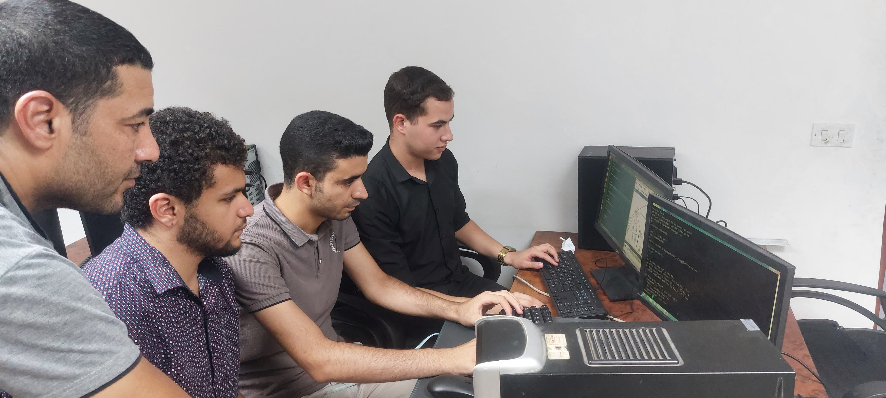
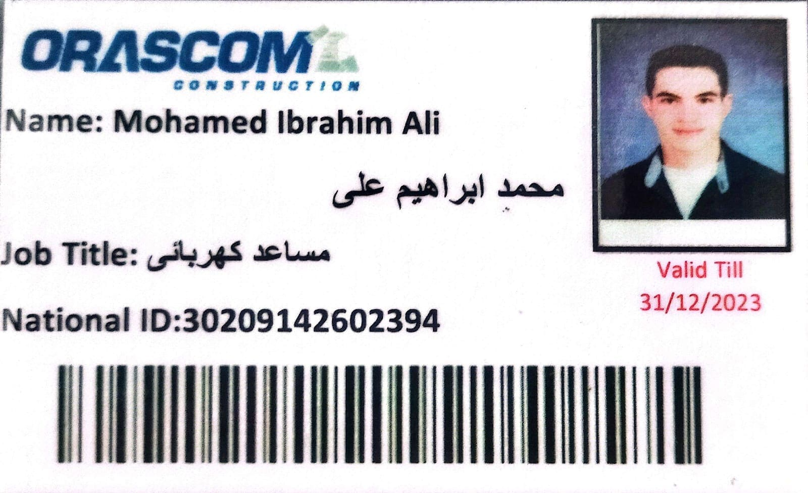

EXPERIENCE
Professional Experience
My professional journey spans industrial electrical systems, telecommunications training, web development, and practical craftsmanship. Each experience has contributed to building my technical expertise and collaborative skills.
AWS Cloud Training
Cloud Computing
2026Completed AWS Cloud training program covering cloud computing fundamentals, AWS services, cloud architecture, and deployment strategies. Gained hands-on experience with EC2, S3, and cloud infrastructure management.
National Telecommunication Institute
Training Program
2025Completed intensive training in telecommunications and networking fundamentals. Developed skills in network infrastructure, communication systems, and modern telecommunication technologies.

Telecom Egypt (WE)
CCNA Training
2025Participated in Cisco Certified Network Associate (CCNA) training program. Learned networking basics, router and switch configuration, and network troubleshooting techniques.

Web Design Training
Frontend Development
2023Completed comprehensive web design and development training. Mastered HTML, CSS, JavaScript, Bootstrap, and responsive design principles. Built multiple projects demonstrating modern web development skills.

Orascom Construction
Electrical Assistant
2021 - 2023Assisted in electrical installation and maintenance for the Tram Power project. Gained hands-on experience in industrial power systems, electrical wiring, and safety protocols in large-scale construction projects.
Freelance Work
Craftsman Assistant
2020Worked in various local projects including painting and finishing work. Developed teamwork, practical problem-solving skills, discipline, and collaboration in real-life working environments.